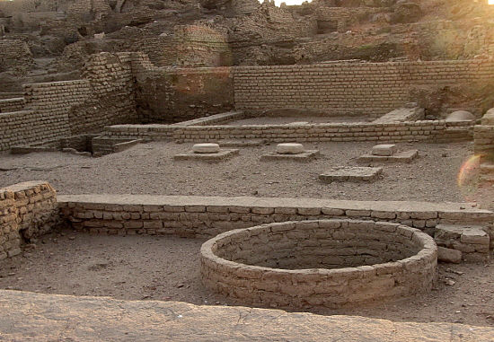

Egypt Trav-E-Log ©
Elephantine Island
15 Nov 2010, Aswan, Egypt
-------------------------------------------
Elephantine Island is a small island in Aswan, downstream of the first cataract, and both dams at Aswan. Ruins of the Temple of Khnum are located here which date back to the third dynasty. Elephantine Island is also the site of an ancient jewish community which stored legal documents and letters written in Aramaic. This has resulted in a treasure trove of information about life dating back to the 6th century BCE.I spent several leisure hours just walking around the island as well as the temple ruins.
-------------------------------------------
Photos of Ruins of the Temple of Khnum. (Right and below.) | |
|  |
| |
| Photos while walking around the village on Elephantine Island. |
Sunset while returning across the Nile to Aswan. | |
Question? Contact me at the Juno.com address Dancer2SEAsia.
Life is Good When You Travel! Start planning your next trip!